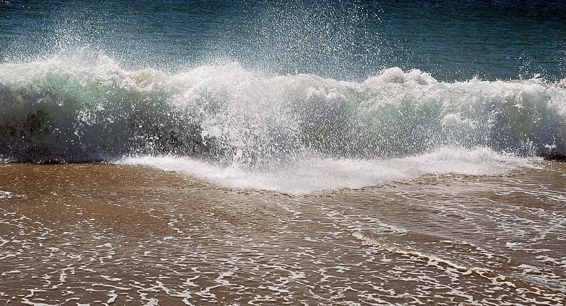

La ola que siente el fondo, se frena, se empina y rompe
Mar adentro, una ola es una ondulación suave que pasa por debajo de un barco sin romper. Al llegar a la playa, la misma ola se levanta, se empina y se derrumba en espuma. Nada cambió en la ola: cambió el fondo. Cuando el agua se vuelve poco profunda, la ola «siente» el fondo, y eso la transforma. Ese proceso se llama asomeramiento.
En aguas profundas, la velocidad de una ola no depende de la profundidad, porque el fondo está demasiado lejos [1]. Pero cuando la profundidad se vuelve chica comparada con la longitud de onda, David Tong, de la Universidad de Cambridge, muestra que la velocidad pasa a ser c = √(gH): depende solo de la profundidad H [1]. Cuanto menos profunda el agua, más lenta la ola.
Según Andrew Short, en un artículo sobre procesos costeros de Nature Education, al acercarse a la costa las olas interactúan con el fondo, se frenan y aumentan su pendiente y su altura [2]. Short describe la playa desde la «base de la ola», el punto donde las olas empiezan a sentir el fondo, pasando por la zona de asomeramiento y la zona de rompiente, hasta el límite de la resaca sobre la arena [2].
Tong explica otro efecto del fondo: si una ola llega a la playa en diagonal, la parte del frente que está más lejos de la costa, en agua más profunda, viaja más rápido que la parte que ya está cerca [1]. Así, la ola va girando hasta quedar paralela a la playa [1]. Por eso las olas tienden a romper casi de frente a la orilla (un razonamiento a partir de la explicación de Tong).
La fila que dobla: imaginá una fila de soldados que marcha en diagonal hacia un terreno embarrado. Los primeros que pisan el barro se frenan, los demás siguen a paso normal, y la fila entera gira hasta quedar paralela al borde del barro. Eso hace el frente de una ola cuando llega a la costa.
Al crecer y empinarse, la ola llega a un punto en que no puede sostenerse. Short da una regla práctica: las olas rompen cuando la profundidad del agua es de alrededor de 1,5 veces la altura de la ola [2]. Una ola de un metro, entonces, rompe donde el agua tiene un metro y medio de profundidad (un cálculo propio con esa regla).
La forma de romper depende de la pendiente de la playa. Según Short, las olas rompen como rompiente de derrame en pendientes suaves, como rompiente en voluta en pendientes moderadas y como rompiente de oleada en pendientes empinadas [2]:
En la rompiente de derrame, la cresta se va deshaciendo en espuma; en la de voluta, la cresta cae hacia adelante; en la de oleada, la ola sube por la playa casi sin romper (una descripción general de los tres tipos que nombra Short).

Al romper, dice Short, la ola convierte su energía potencial en cinética: se vuelve una ola rota que avanza hacia la orilla como espuma blanca [2]. Junto a la costa, las corrientes pueden desviarse a lo largo de la playa, y el agua puede volver mar adentro por las corrientes de resaca, canales angostos que llevan el agua de vuelta y que son, según Short, responsables de la mayoría de los rescates en las playas [2]. Short recuerda además que las olas aportan alrededor de la mitad de la energía que trabaja en la costa, y que pueden viajar miles de kilómetros por el océano antes de liberarla al romper [2].
Mar de viento y mar de fondo: Short distingue las olas que todavía se están generando, el «mar», cortas, empinadas y altas, que tienden a volcar y romper, del mar de fondo, olas que ya se alejaron de su origen y pueden viajar muy lejos perdiendo poca energía [2]. La diferencia tiene que ver con la dispersión: en aguas profundas, las olas largas se adelantan a las cortas [1].
Una ola rompe porque el fondo la frena. Al llegar a aguas someras, su velocidad pasa a depender solo de la profundidad; la ola se frena, se empina, crece y gira hasta quedar paralela a la playa. Cuando la profundidad es de alrededor de una vez y media su altura, ya no se sostiene y rompe, de distinta manera según la pendiente de la playa.
Pregunta para la comunidad: En algunas playas las olas rompen lejos de la orilla, en un banco de arena, y vuelven a formarse antes de romper de nuevo en la costa. ¿Cómo lo explica la regla de Short? ¿Qué tiene que pasar con la profundidad entre el banco y la orilla?